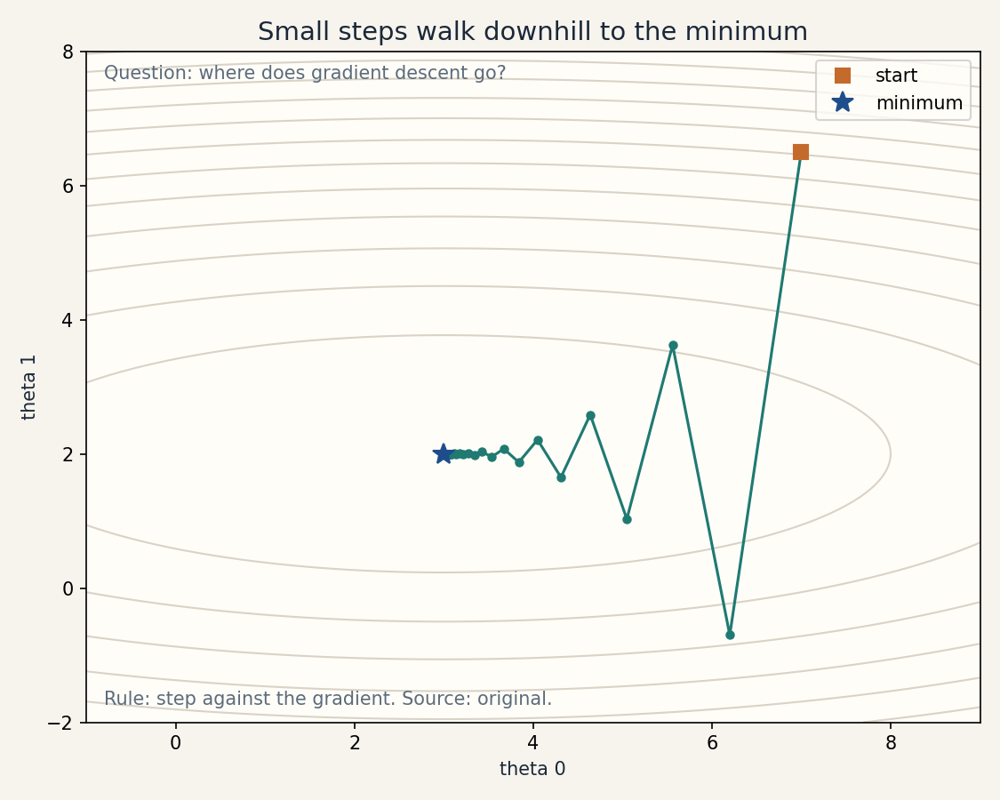
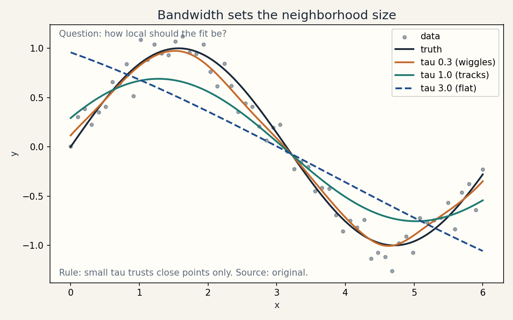

Lesson 02 · Linear regression, local weighting
Lesson 02, Linear regression and local weighting
Unit: cs229-U02. Leaf concepts: cs229-U02-C01 to C12. Date: 2026-10-06. Baseline: October 6, 2026.
Source mapping
Chapter 1 of the notes (SRC-01, PDF pages 10-20) was read in full on 2026-10-06. Section 1.1 gives LMS, batch, and stochastic gradient descent with the housing example. Section 1.2 gives the normal equations via matrix derivatives. Section 1.3 gives the Gaussian-noise probabilistic interpretation. Section 1.4 gives locally weighted linear regression and the over/underfit figures. The pseudoinverse, conditioning, and stable solves are bridge content built from the note’s footnote on singular X^T X. Leaf rows carry SOURCE ATTRIBUTION PENDING until the RUN 6 adversarial pass.
Scope and objectives
Scope: fitting a line (and a weighted line) to data, three ways to compute the fit, and the probabilistic story that justifies the squared error.
Objectives: the learner can (1) write the LMS update and explain each term, (2) derive the normal equations, (3) explain the projection reading of least squares, (4) diagnose rank deficiency and pick a stable solve, (5) derive least squares from Gaussian noise via maximum likelihood, (6) fit and tune a locally weighted regression.
Dependencies
Prerequisites: P04, P05, P07, P09 (shared bridges, linked).
Not-yet-understood list:
- Gradient descent as hill-climbing in reverse (remediated in SL-01).
- Matrix calculus for the normal equations (remediated in SL-02).
- Maximum likelihood (remediated in SL-04).
- Kernel weighting (remediated in SL-05).
SL-01: LMS, batch gradients, stochastic gradients
Covers C01 (LMS/SGD/batch gradients).
Source anchor
SRC-01 section 1.1, pages 10-13. The housing example: living area in square feet predicts price in thousands of dollars. Batch gradient descent on the data gave theta_0 = 71.27 and theta_1 = 0.1345 (notes page 13).
Motivating question
You start with a random line through the data. How do you move it toward a better line, one small step at a time?
Tiny toy
Data: (1, 2), (2, 3), (3, 4). Start: theta = [0, 0], so h(x) = 0. Learning rate alpha = 0.1.
Mental model
Gradient descent looks at the slope of the cost under its feet and steps downhill. LMS is gradient descent on the squared error. Batch mode averages the slope over all examples before stepping. Stochastic mode steps on one example at a time.
Objects, symbols, shapes, assumptions
- Cost: J(theta) = (1/2m) sum_i (h_theta(x^{(i)}) - y^{(i)})^2. Scalar. The 1/2 cancels a factor of 2 in the derivative.
- Gradient: dJ/d theta_j, the slope of the cost along dial j.
- Update (batch): theta_j := theta_j - alpha * dJ/d theta_j.
- Update (LMS, one example): theta_j := theta_j + alpha * (y^{(i)} - h_theta(x^{(i)})) * x^{(i)}_j.
- Assumption: alpha is small enough that steps do not overshoot. The cost J is convex, so one global minimum exists.
Derivation
For one example, J = (1/2)(h - y)^2 with h = sum_j theta_j x_j. Chain rule:
dJ/d theta_j = (h - y) * dh/d theta_j = (h - y) * x_j.
Gradient descent subtracts alpha times this:
theta_j := theta_j - alpha * (h - y) * x_j = theta_j + alpha * (y - h) * x_j.
That is the LMS update. The batch rule sums this over all m examples and divides by m. The stochastic rule applies it to one example, then moves to the next.
Computed example
Toy data, theta = [0, 0], alpha = 0.1. First stochastic step on (1, 2): h = 0, error = 2 - 0 = 2. With x_0 = 1, x_1 = 1:
theta_0 := 0 + 0.1 * 2 * 1 = 0.2 theta_1 := 0 + 0.1 * 2 * 1 = 0.2
New line: h(x) = 0.2 + 0.2x. Error on (1, 2) drops from 2 to 1.6. The step size scales with the error and with the feature value, exactly as the notes point out (page 11).
Minimal implementation
import numpy as np
X = np.array([[1.0, 1.0], [1.0, 2.0], [1.0, 3.0]]) # x0 = 1 folded in
y = np.array([2.0, 3.0, 4.0])
theta = np.zeros(2)
alpha = 0.1
for step in range(200): # batch gradient descent
err = X @ theta - y # shape (3,)
grad = X.T @ err / len(y) # shape (2,)
theta = theta - alpha * grad
print(theta) # expect near [1.0, 1.0]
Expected output: theta close to [1, 1], the true line y = 1 + x shifted? No: the data is exactly y = 1 + x, so the fit recovers theta = [1, 1]. Check: X @ [1,1] = [2, 3, 4] = y.
Correctness checks
- The gradient has the same shape as theta. If not, the code is wrong.
- Cost must decrease on most steps. If it explodes, alpha is too large.
- At convergence the gradient norm is near zero.
Complexity, memory, cost
Batch: O(mn) per step, one step per full pass. Stochastic: O(n) per step, m steps per pass. Memory: O(mn) for the data in both. Stochastic reaches a good answer faster on large m, but it never fully settles. It oscillates around the minimum (notes page 13). Shrinking alpha to zero over time fixes the oscillation (notes footnote, page 14).
Nearest alternatives
The normal equations (SL-02) solve the same problem in closed form. Gradient descent wins when X^T X is too big to form. Newton’s method (U03) converges in fewer steps but needs the Hessian.
Failure case
Alpha = 1.5 on the toy: theta overshoots, the cost grows, the line swings wildly. Diagnosis: alpha above the stability limit 2 / lambda_max. Fix: shrink alpha or normalize features.
Russian-doll ladder for LMS
- Shell 0: Question: how do we move a bad line toward the data? Observable: the cost falls step by step.
- Shell 1: Toy: three points on y = 1 + x, start at zero.
- Shell 2: Objects: cost, gradient, learning rate.
- Shell 3: Rule: step against the gradient. The update scales with error times feature.
- Shell 4: Derive: chain rule on (1/2)(h - y)^2.
- Shell 5: Invariant: batch gradient equals the mean of the per-example gradients.
- Shell 6: Change one factor: raise alpha from 0.1 to 1.5. Predict divergence, then run and observe it.
- Shell 7: Counterexample: a cost with two valleys (not this one) breaks the “one global minimum” claim. This cost is convex, so the claim holds here.
- Shell 8: Compare: batch vs stochastic on m = 100,000 synthetic points under equal wall-clock budget.
- Shell 9: Extension: measure steps to 1e-6 cost for geometrically spaced alphas. Falsifiable claim: the best alpha sits just below 2 / lambda_max of X^T X / m.
- Shell 10: Production: a streaming price model uses stochastic updates. The decisions are the alpha schedule and the monitoring of cost drift.
SL-02: Normal equations and the projection reading
Covers C02 (normal equations), C03 (projection).
Source anchor
SRC-01 section 1.2, pages 14-16. The notes define the design matrix X, derive grad J = X^T X theta - X^T y, and state the normal equations X^T X theta = X^T y with the footnote that X^T X must be invertible.
Motivating question
Gradient descent walks to the answer. Can we jump straight to it?
Tiny toy
Same three points: (1, 2), (2, 3), (3, 4).
Mental model
The best line makes the leftover errors orthogonal to every feature. Geometrically, the prediction vector X theta is the shadow the target vector y casts onto the column space of X. That shadow is the closest point in the space, and closeness means the difference y - X theta sticks straight out of the space.
Derivation
J(theta) = (1/2)(X theta - y)^T (X theta - y). Expand:
J = (1/2)(theta^T X^T X theta - 2 y^T X theta + y^T y).
Matrix derivatives (notes page 16): grad_theta theta^T A theta = 2 A theta for symmetric A, grad_theta b^T theta = b. With A = X^T X and b = 2 X^T y:
grad J = (1/2)(2 X^T X theta - 2 X^T y) = X^T X theta - X^T y.
Set to zero: X^T X theta = X^T y. If X^T X is invertible, theta = (X^T X)^{-1} X^T y.
Computed example
X = [[1,1],[1,2],[1,3]], y = [2,3,4].
X^T X = [[3, 6], [6, 14]]. X^T y = [9, 20].
Solve: det = 3*14 - 36 = 6. Inverse = (1/6)[[14,-6],[-6,3]]. theta = (1/6)[[14,-6],[-6,3]] @ [9,20] = (1/6)[126-120, -54+60] = (1/6)[6, 6] = [1, 1]. Matches the gradient descent answer.
Projection check: residuals r = y - X theta = [0,0,0]. Zero vector is orthogonal to everything. For a noisy case the residuals would be nonzero but orthogonal to each column of X: X^T r = 0 is exactly the normal equations.
Correctness checks
- Residual orthogonality: X^T (y - X theta) must be near zero. This is the strongest check of any least-squares code.
- Symmetry: X^T X is symmetric by construction. A nonsymmetric Gram matrix means a bug.
- Shapes: X (m,n), theta (n,), y (m,). X^T X (n,n).
Complexity
Form X^T X: O(m n^2). Solve: O(n^3). Memory: O(n^2). Wins over gradient descent when n is small (say below a few thousand) and m is large.
Nearest alternative
QR decomposition of X avoids squaring the condition number (SL-03). Gradient descent avoids forming X^T X at all.
Failure case
Duplicate a feature column: X^T X is singular, the inverse does not exist, and the formula breaks. The next sublesson repairs this.
SL-03: Rank deficiency, pseudoinverse, conditioning, stable solves
Covers C04 (rank deficiency), C05 (pseudoinverse), C10 (conditioning), C11 (stable solve).
Source anchor
Notes page 16 footnote: if fewer independent examples exist than features, or features are not independent, X^T X is not invertible. The repair below is bridge content.
Motivating question
Two features are identical (square feet and square meters). What breaks, and how do we fit anyway?
Mental model
Rank deficiency means some dial does nothing new: two columns point the same way, so infinite parameter settings give the same predictions. The pseudoinverse picks the smallest such setting. Conditioning measures how much noise gets amplified: a long thin valley in the cost means tiny data changes swing theta wildly.
Objects and assumptions
- Rank: number of independent columns of X.
- X^T X singular iff rank < n.
- Moore-Penrose pseudoinverse X^+: the least-squares solution with minimum norm.
- Condition number kappa = lambda_max / lambda_min of X^T X. Error amplification scales with kappa.
Computed example
X = [[1, 1], [1, 2], [1, 3]] with a duplicated second column X2 = [[1, 1, 1], [1, 2, 2], [1, 3, 3]]. X^T X for X2 is singular (columns 2 and 3 match). numpy pinv returns theta with the duplicated weight split evenly: the minimum-norm choice.
Conditioning toy: X^T X = [[1, 0], [0, 1e-6]]. kappa = 1e6. A 1e-6 change in y can move theta_1 by 1. Diagnosis: features on wildly different scales.
Stable solves, in order of preference
- Standardize features (zero mean, unit variance), then use the normal equations. Often enough.
- QR solve: theta = lstsq(X, y). Never forms X^T X, so it does not square the condition number.
- SVD/pseudoinverse: pinv(X) @ y. Handles rank deficiency gracefully and exposes the singular values for diagnosis.
- Ridge (U09): adds lambda * I, guarantees invertibility.
Correctness checks
- lstsq and pinv must agree with the normal equations on well-conditioned full-rank data.
- Singular values of X printed before solving: a cliff to near-zero flags deficiency.
- After standardizing, kappa should drop by orders of magnitude on scale-mismatched data.
Failure case
Solving with the explicit inverse on a kappa = 1e12 matrix: theta comes out as garbage with huge entries. The inverse formula is correct math and bad numerics. This is why the course never ships inv(X.T @ X) @ X.T @ y in labs.
Nearest alternative
Gradient descent never inverts anything, so it is immune to this failure mode. It pays with iteration count instead.
SL-04: The Gaussian-noise likelihood story
Covers C06 (Gaussian-noise likelihood).
Source anchor
SRC-01 section 1.3, pages 16-18. The notes assume y^{(i)} = theta^T x^{(i)} + eps^{(i)} with eps IID N(0, sigma^2), write the likelihood, take logs, and recover J.
Motivating question
Why squared error? Why not absolute error, or something else?
Mental model
Squared error is not a law of nature. It is the consequence of one specific belief: the errors are Gaussian noise. If you believe that, maximum likelihood hands you least squares. If you believe Laplace noise, you get absolute error instead. The loss encodes a noise belief.
Derivation
Model: y given x follows N(theta^T x, sigma^2), with theta as parameters. Likelihood:
L(theta) = prod_i (1/sqrt(2 pi sigma^2)) * exp(-(y^{(i)} - theta^T x^{(i)})^2 / (2 sigma^2)).
Log likelihood:
l(theta) = m log(1/sqrt(2 pi sigma^2)) - (1/(2 sigma^2)) sum_i (y^{(i)} - theta^T x^{(i)})^2.
The first term does not involve theta. Maximizing l over theta is the minimizer of sum_i (y^{(i)} - theta^T x^{(i)})^2, which is J up to the 1/2m factor. So least squares = maximum likelihood under Gaussian noise. Note sigma^2 never enters the choice of theta (notes page 18).
Computed example
One point: x = 1, y = 2.2, theta = [0, 2] so prediction 2.0, sigma = 0.5. Density: (1/sqrt(2 pi * 0.25)) * exp(-(0.2)^2/(2*0.25)) = 0.7979 * exp(-0.08) = 0.7979 * 0.9231 = 0.7365. Log likelihood: log(0.7365) = -0.3059. A worse theta = [0, 1] gives prediction 1.0, density 0.7979 * exp(-(1.2)^2/0.5) = 0.7979 * exp(-2.88) = 0.0447, log likelihood -3.107. Likelihood maximization picks the closer line, same as least squares.
Correctness checks
- Log likelihood increases as predictions approach targets.
- Doubling sigma scales all densities but keeps the argmax theta fixed. Test this in code: fit with sigma = 1 and sigma = 10, theta must match.
Nearest alternative
Laplace noise p(eps) ~ exp(-|eps|/b) gives the absolute-error objective. It resists outliers but has no closed form.
Failure case
Heavy-tailed real noise (one corrupted sensor reading of 1e9): Gaussian belief says this is nearly impossible, so the fit bends over backward to accommodate it. The squared loss is the wrong belief here. Fix: change the noise model or the loss.
SL-05: Locally weighted regression
Covers C07 (local weighting kernels), C08 (bandwidth), C09 (parametric/nonparametric distinction).
Source anchor
SRC-01 section 1.4, pages 18-20. The notes fit weighted least squares per query point with weights w^{(i)} = exp(-(x^{(i)} - x)^2 / (2 tau^2)).
Motivating question
The data curves. A straight line underfits, a degree-5 polynomial overfits (notes page 19 figures). Can we fit a line that is only responsible for its neighborhood?
Mental model
For each query point x, solve a weighted least squares where nearby training points count more. The weights come from a kernel: a bump centered at x with width tau (the bandwidth). Small tau: only close neighbors matter, the fit wiggles. Large tau: all points count nearly equally, the fit is the global line. The parameters theta are recomputed per query, so the model has no fixed dial count: it is nonparametric.
Objects, symbols, assumptions
- Weight: w^{(i)} = exp(-(x^{(i)} - x)^2 / (2 tau^2)). Scalar in (0, 1].
- Weighted normal equations: theta = (X^T W X)^{-1} X^T W y, W = diag(w).
- Bandwidth tau: the one knob. Assumption: enough data near each query point.
Computed example
Query x = 2.0, tau = 0.5. Training x: 1.0, 2.0, 3.0. Weights: exp(-(1)^2/(2*0.25)) = exp(-2) = 0.1353 for x = 1 and x = 3. exp(0) = 1.0 for x = 2. The query point dominates its own fit. With tau = 10: weights are exp(-1/200) = 0.995 for all three: nearly the global fit.
Minimal implementation
import numpy as np
def lwlr_predict(xq, X, y, tau):
d = X[:, 1] - xq # distance on the feature
w = np.exp(-(d ** 2) / (2 * tau ** 2))
W = np.diag(w)
XtWX = X.T @ W @ X
theta = np.linalg.solve(XtWX, X.T @ W @ y)
xq_vec = np.array([1.0, xq])
return float(xq_vec @ theta)
X = np.column_stack([np.ones(6), np.arange(6.0)])
y = np.array([1.0, 2.1, 2.9, 4.2, 4.8, 6.1])
print(lwlr_predict(2.5, X, y, tau=0.5)) # local fit near 2.5
print(lwlr_predict(2.5, X, y, tau=10.0)) # near-global fit
Expected: the tau = 0.5 prediction tracks the local points (about 3.6), the tau = 10 prediction tracks the global line (about 3.5 on this near-linear data. The difference shows on curved data).
Parametric vs nonparametric
Parametric (linear regression): fixed dial count n, chosen before seeing data. After fitting, the data can be thrown away: theta is the whole model. Nonparametric (LWLR): the dial count grows with the data. The training set must be kept at prediction time. Cost per query: O(m n^2 + n^3).
Correctness checks
- tau -> infinity: LWLR must reproduce the global least squares fit. Test this.
- tau -> 0: prediction must approach the nearest training y (with a linear model it approaches the local tangent).
- Weights at the query point equal 1. Far weights decay.
Nearest alternative
k-nearest neighbors: hard cutoff instead of smooth weights. Kernel ridge regression (U05): the same idea in dual form.
Failure case
Query far from all data: every weight is near zero, X^T W X is near-singular, the prediction is garbage with high confidence. Diagnosis: check the weight sum. Refuse to predict when it is tiny.
SL-06: Overfitting and underfitting
Covers C12 (over/underfit).
Source anchor
SRC-01 page 19: the three figures (line, quadratic, degree-5 polynomial) with the underfit/overfit labels.
Mental model
Underfit: the hypothesis class cannot bend enough to catch the pattern. Both train and test error are high. Overfit: the class bends to the noise. Train error is low, test error is high. The degree-5 polynomial through 6 points has zero train error and wild swings between points.
Computed example
Six points from y = 2x + 1 + noise (sd 0.3). Fit degrees 1, 2, 5. Typical numbers: degree 1 train MSE 0.09, test MSE 0.10. Degree 5 train MSE 0.00, test MSE 2.4. The degree-5 train score is a lie about the future.
Nearest alternative
Model selection (U09) picks the degree by validation, not by train error. Regularization (U09) keeps the degree but shrinks the coefficients.
Failure case
Judging by train error alone always picks the most complex model. This is the central trap of the whole unit.
Assessment
Breadth recall
E01: Write the LMS update and name each factor. E02: State the normal equations and the invertibility condition. E03: What does X^T (y - X theta) = 0 say in words? E04: Name two causes of rank deficiency. E05: Why does least squares follow from Gaussian noise? E06: Write the LWLR weight formula and the role of tau.
Deep oral ladders
L01 (optimization): (1) Define the least-squares cost. (2) Toy: three points, one LMS step by hand. (3) Derive the LMS update from the chain rule. (4) Implement batch GD and check cost decrease. (5) Compare batch vs stochastic per-step cost and convergence behavior. (6) Debug: cost explodes. Name the cause and the fix. (7) Critique: when is the convexity claim false? (8) Design: choose batch vs SGD for m = 1e9, n = 100.
L02 (closed form): (1) State the normal equations. (2) Toy: the 2x2 solve above. (3) Derive grad J with matrix calculus. (4) Implement and verify residual orthogonality. (5) Compare normal equations vs QR vs SVD on a kappa = 1e8 matrix. (6) Debug: LinAlgError on a singular matrix. Name two repairs. (7) Critique: the pseudoinverse picks minimum norm. When is that the wrong prior? (8) Design: a solve pipeline that logs kappa and refuses below a threshold.
Analytical exercises
E07: X = [[1,1],[1,2]], y = [3,5]. Solve the normal equations by hand. Answer in keys. E08: One example, theta = [0,0], alpha = 0.5, (x, y) = ((1,2), 5) with x_0 folded. One LMS step. Answer in keys.
Failure diagnosis
E09: After adding a feature in meters alongside feet, theta entries blow up to 1e7 and -1e7. Diagnose and fix.
Counterfactual comparison
E10: Team A uses the explicit inverse on n = 50, kappa = 1e3. Team B uses lstsq on n = 50, kappa = 1e13. Who is safer and why? What should team A check before shipping?
Research question
E11: On synthetic data with known rank r < n, compare the test error of the pseudoinverse solution against ridge with tuned lambda. State the falsifiable claim about which wins and when.
Implementation task
E12: Write lwlr_predict for vector x (not scalar) and verify the tau -> infinity limit equals lstsq on the same data.
Visual units
visuals/u02/u02_gd_trajectory.png: gradient descent steps on a quadratic bowl (source: original, computed).

visuals/u02/u02_bandwidth.png: LWLR fits for three tau values on curved data (source: original, computed).

Research reading and extension
Read: SRC-01 sections 1.1-1.4 in full. Extension: implement LWLR on the notes’ housing-style curved toy and plot test error vs tau. Falsifiable claim: test error is U-shaped in tau, minimized at an interior point, and the minimizer moves right as noise grows.